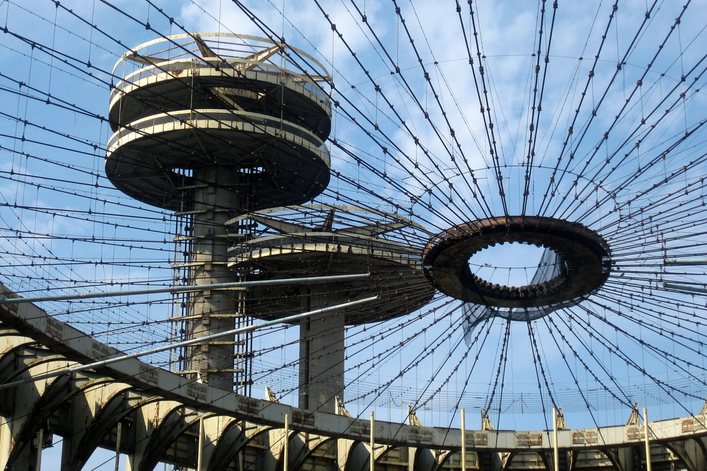

State of Ruin
As of now, many parts of the former site are in utter ruin. The New York Pavilion was one of the most well known examples of this. Plagued with rust and graffiti the site is off limits to the general public, although people do go there to take pictures and trepass often on the abandoned site.
There are various organizations and public conservatory groups that are helping the city and state of New York with plans to revitalize the former Worlds Fair site in the hopes that it can regain its former glory.